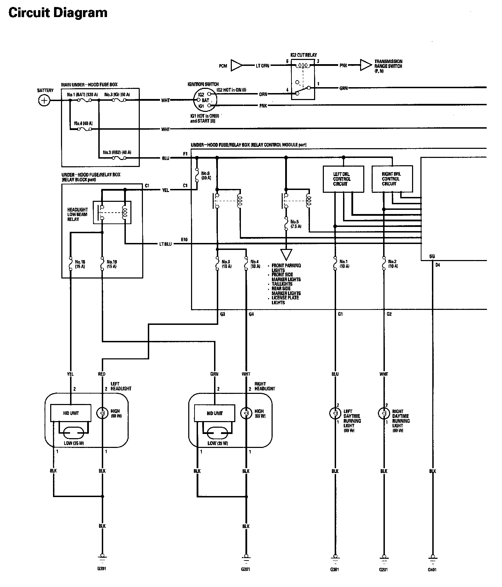
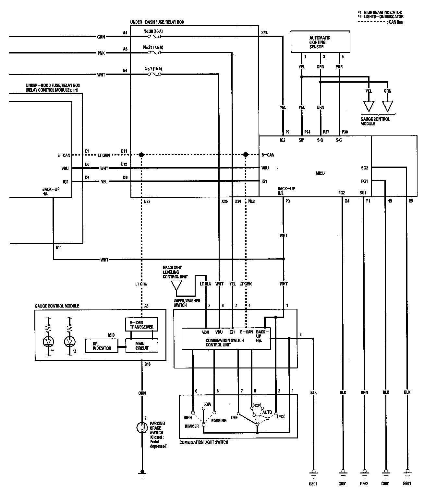
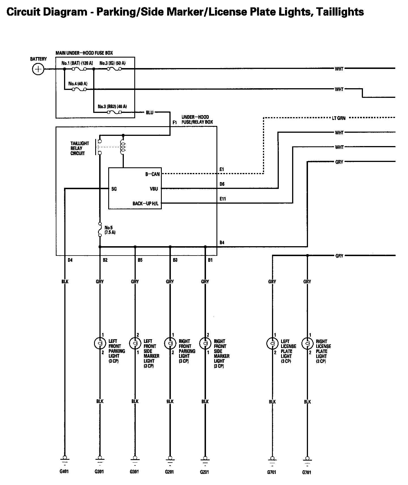
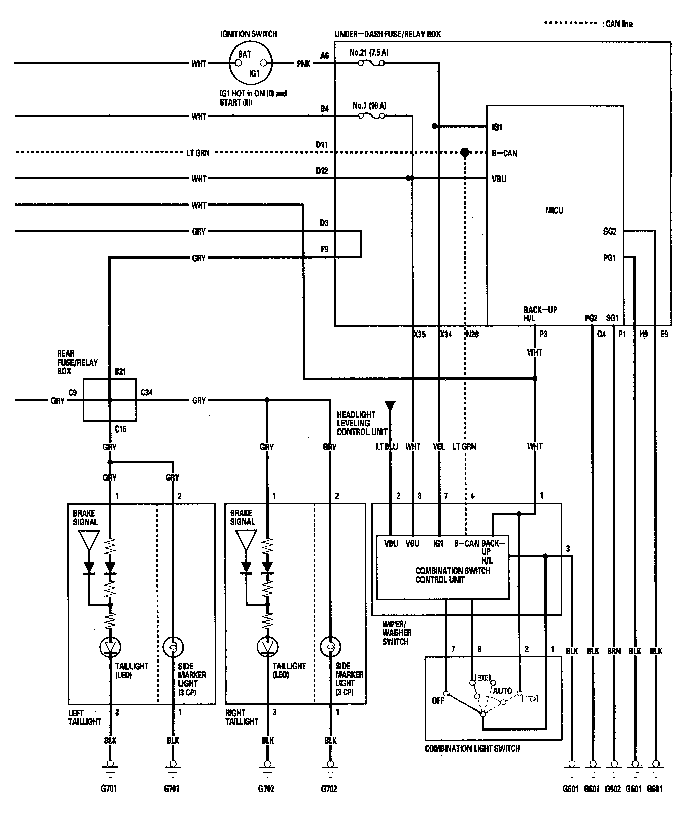
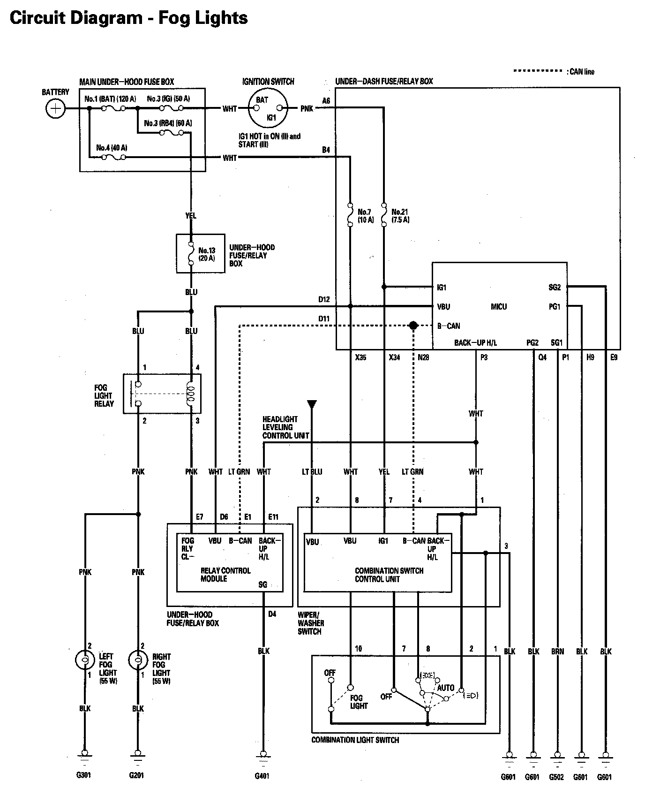
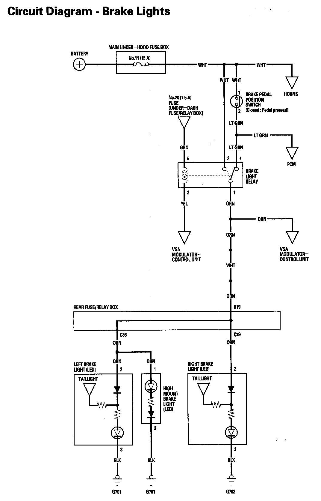
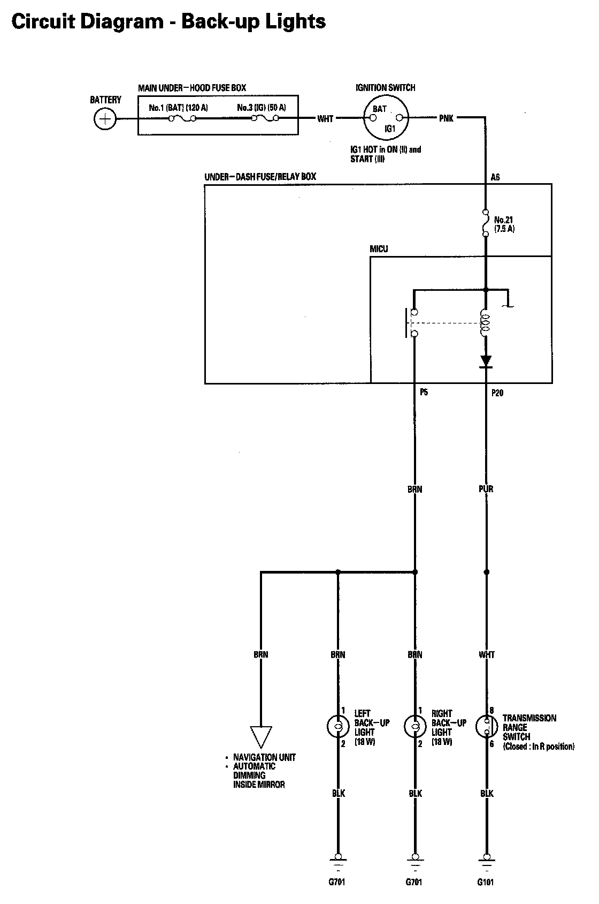

Exterior Lights Circuit Diagram
Exterior Lights Circuit Diagram Part 1:

Exterior Lights Circuit Diagram Part 2:

Exterior Lights Circuit Diagram - Parking/Side Marker/License Plate Lights, Taillights Part 1:

Exterior Lights Circuit Diagram - Parking/Side Marker/License Plate Lights, Taillights Part 2:

Exterior Lights Circuit Diagram - Fog Lights:

Exterior Lights Circuit Diagram - Brake Lights:

Exterior Lights Circuit Diagram - Back-up Lights:
